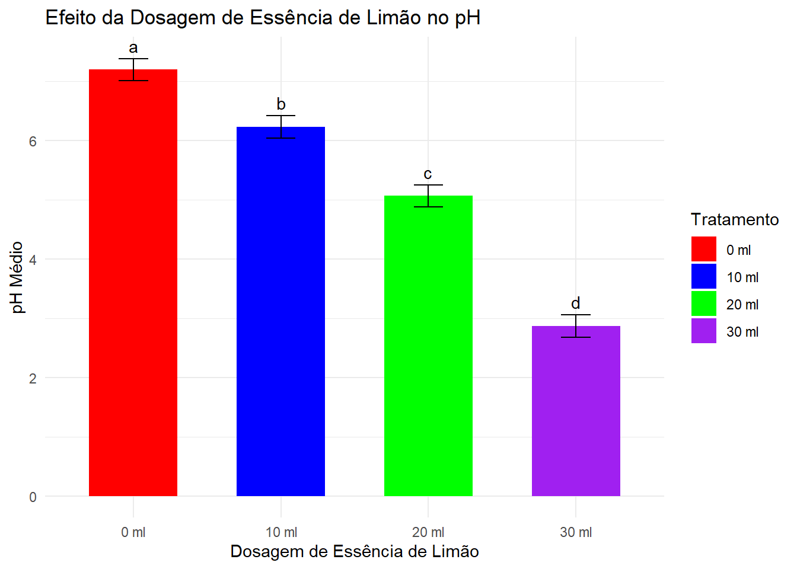

12 Comparações entre tratamentos
Em experimentos com delineamentos usuais, tais como o inteiramente aleatorizado, as comparações múltiplas podem ser feitas a partir do pacote brasileiro
ExpDes.
O ExpDes apresenta uma função para cada tipo de delineamento experimental. Com ele, também é possível realizar a análise de experimentos com tratamentos em esquema fatorial de forma fácil e intuitiva. Porém, o pacote não comporta recursos para delineamentos mais específicos e para a análise de efeitos aleatórios.
Nesta seção, usamos a função crd destinada à análise de Delineamentos Inteiramente Casualizados (Complete Randomized Desing). Nesse comando, a entrata treat designa o vetor de tratamentos, a entrada resp designa o vetor de respostas, quali indica se os tratamentos são qualitativos ou não, e os níveis de significância para os testes T e F são atrivuídos por sigT e sigF, respectivamente.
12.1 Análise quantitativa
# Carregar o pacote expdes
if(!requireNamespace("ExpDes", quietly = TRUE)) install.packages("ExpDes")
library(ExpDes)
# Realizando a análise com a função dic
resultado_dic <- crd(treat = dados$Dose, resp = dados$pH, quali = FALSE, sigT = 0.05, sigF = 0.05)## ------------------------------------------------------------------------
## Analysis of Variance Table
## ------------------------------------------------------------------------
## DF SS MS Fc Pr>Fc
## Treatament 3 31.349 10.450 99.521 1.1293e-06
## Residuals 8 0.840 0.105
## Total 11 32.189
## ------------------------------------------------------------------------
## CV = 6.07 %
##
## ------------------------------------------------------------------------
## Shapiro-Wilk normality test
## p-value: 0.1224459
## According to Shapiro-Wilk normality test at 5% of significance, residuals can be considered normal.
## ------------------------------------------------------------------------
##
## ------------------------------------------------------------------------
## Homogeneity of variances test
## p-value: 0.7162275
## According to the test of bartlett at 5% of significance, residuals can be considered homocedastic.
## ------------------------------------------------------------------------
##
## Adjustment of polynomial models of regression
## ------------------------------------------------------------------------
##
## Linear Model
## ===========================================
## Estimate Standard.Error tc p.value
## -------------------------------------------
## b0 7.4667 0.1565 47.7028 0
## b1 -0.1417 0.0084 -16.9324 0
## -------------------------------------------
##
## R2 of linear model
## --------
## 0.960286
## --------
##
## Analysis of Variance of linear model
## ===============================================
## DF SS MS Fc p.value
## -----------------------------------------------
## Linear Effect 1 30.1042 30.1042 286.71 0
## Lack of fit 2 1.2450 0.6225 5.93 0.02634
## Residuals 8 0.8400 0.1050
## -----------------------------------------------
## ------------------------------------------------------------------------
##
## Quadratic Model
## ==========================================
## Estimate Standard.Error tc p.value
## ------------------------------------------
## b0 7.1583 0.1824 39.2569 0
## b1 -0.0492 0.0293 -1.6790 0.1317
## b2 -0.0031 0.0009 -3.2962 0.0109
## ------------------------------------------
##
## R2 of quadratic model
## --------
## 0.996677
## --------
##
## Analysis of Variance of quadratic model
## ==================================================
## DF SS MS Fc p.value
## --------------------------------------------------
## Linear Effect 1 30.1042 30.1042 286.71 0
## Quadratic Effect 1 1.1408 1.1408 10.87 0.01092
## Lack of fit 1 0.1042 0.1042 0.99 0.34841
## Residuals 8 0.8400 0.1050
## --------------------------------------------------
## ------------------------------------------------------------------------
##
## Cubic Model
## ==========================================
## Estimate Standard.Error tc p.value
## ------------------------------------------
## b0 7.2000 0.1871 38.4856 0
## b1 -0.1144 0.0718 -1.5943 0.1495
## b2 0.0032 0.0063 0.4991 0.6311
## b3 -0.0001 0.0001 -0.9960 0.3484
## ------------------------------------------
##
## R2 of cubic model
## -
## 1
## -
##
## Analysis of Variance of cubic model
## ==================================================
## DF SS MS Fc p.value
## --------------------------------------------------
## Linear Effect 1 30.1042 30.1042 286.71 0
## Quadratic Effect 1 1.1408 1.1408 10.87 0.01092
## Cubic Effect 1 0.1042 0.1042 0.99 0.34841
## Lack of fit 0 0 0 0 1
## Residuals 8 0.8400 0.1050
## --------------------------------------------------
## ------------------------------------------------------------------------12.2 Análise qualitativa
mpcomp designa o método de comparação múltipla a ser usado
# Realizando a análise com a função dic
resultado_dic <- crd(treat = dados$Dose, resp = dados$pH, quali = TRUE, mcomp = "tukey", sigT = 0.05, sigF = 0.05)## ------------------------------------------------------------------------
## Analysis of Variance Table
## ------------------------------------------------------------------------
## DF SS MS Fc Pr>Fc
## Treatament 3 31.349 10.450 99.521 1.1293e-06
## Residuals 8 0.840 0.105
## Total 11 32.189
## ------------------------------------------------------------------------
## CV = 6.07 %
##
## ------------------------------------------------------------------------
## Shapiro-Wilk normality test
## p-value: 0.1224459
## According to Shapiro-Wilk normality test at 5% of significance, residuals can be considered normal.
## ------------------------------------------------------------------------
##
## ------------------------------------------------------------------------
## Homogeneity of variances test
## p-value: 0.7162275
## According to the test of bartlett at 5% of significance, residuals can be considered homocedastic.
## ------------------------------------------------------------------------
##
## Tukey's test
## ------------------------------------------------------------------------
## Groups Treatments Means
## a 0 7.2
## b 10 6.233333
## c 20 5.066667
## d 30 2.866667
## ------------------------------------------------------------------------12.3 Gráfico de médias
12.3.1 Cálculo das margens de erro
Para o cálculo da margem de erro das médias, devemos considerar:
- O erro quadrático médio do resíduo (EQMR)
\[ EQMR = \frac{\sum_{i =1}^n (y_i - \hat{y}_i)^2}{df_{res}} \]
- O erro padrão da média (SE)
\[ SE = \sqrt{\frac{EQMR}{r}} \]
- A margem de erro
\[ erro = t_{(1 - \alpha/2; \, df)} \, \sqrt{\frac{EQMR}{r}} = t_{\alpha/2; \, df} \, SE \]
em que:
- \(y_i\) e \(\hat{y}_i\) são os valores observados e preditos da resposta;
- \(df_{res}\) é o número de graus de liberdade para os resíduos da análise;
- \(r\) é o número de réplicas por tratamentos;
- \(t_{(1-\alpha/2; \, df)}\) é o quantil da distribuição \(t\) considerando-se o nível de significância \(\alpha\) e \(df\) graus de liberdade.
(EQMR <- sum( residuals(mod_quali)^2 )/8 )## [1] 0.105(SE <- sqrt( EQMR / 3 ))## [1] 0.1870829(ERRO <- qt(0.975, 8)*SE) ## [1] 0.4314139Dessa forma, a margem de erro a se considerar para a estimativa das médias de tratamentos é de \(0,431\) unidades, isso com 95% de confiança.
12.3.3 Resposta do chatGPT-4
Resposta
# Carregar o pacote ggplot2
library(ggplot2)
# Criar o dataframe com os dados do teste de Tukey
dados <- data.frame(
Tratamento = factor(c('0 ml', '10 ml', '20 ml', '30 ml'), levels = c('0 ml', '10 ml', '20 ml', '30 ml')),
Médias = c(7.2, 6.233333, 5.066667, 2.866667),
MargemErro = c(0.187, 0.187, 0.187, 0.187),
Grupo = c('a', 'b', 'c', 'd')
)
# Criar o gráfico de médias com barras de erro
p <- ggplot(dados, aes(x = Tratamento, y = Médias, fill = Tratamento)) +
geom_bar(stat = "identity", position = position_dodge(), width = 0.6) +
geom_errorbar(aes(ymin = Médias - MargemErro, ymax = Médias + MargemErro),
width = 0.2, position = position_dodge(0.6)) +
geom_text(aes(label=Grupo, y=Médias + MargemErro), vjust=-0.5) +
scale_fill_manual(values = c('0 ml' = 'red', '10 ml' = 'blue', '20 ml' = 'green', '30 ml' = 'purple')) +
labs(
title = "Efeito da Dosagem de Essência de Limão no pH",
x = "Dosagem de Essência de Limão",
y = "pH Médio"
) +
theme_minimal()
print(p)